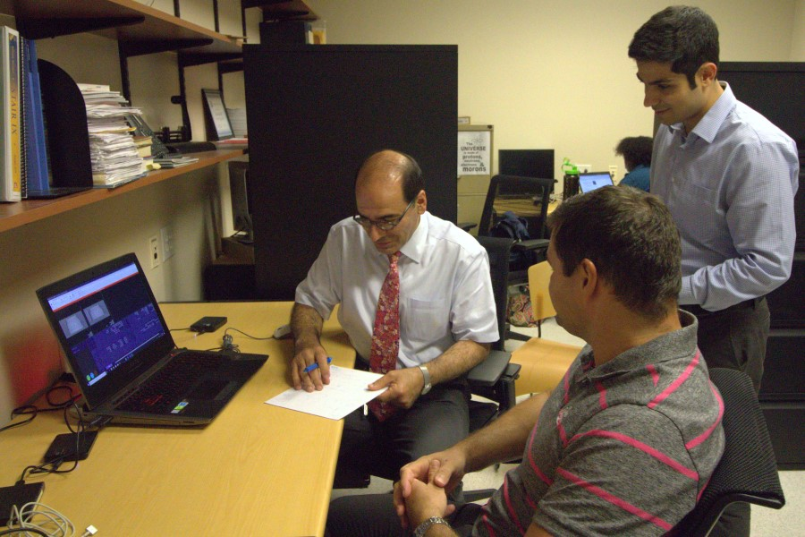

Downloads

Simulation resources developed in this Center, their uses, and the section they are discussed
| Section |
Resource |
TRD1 |
| Prebuilt library of 1000+ 4D XCAT computational phantoms with variable anatomy including models for pregnancy |
| Application to generate populations of XCAT phantoms fit to user characteristics |
| Application to simulate day to day changes in XCAT phantoms |
| Application to incorporate anatomical textures into the XCAT phantoms |
| Lesion modeling program |
| 4D XCAT phantom (takes anatomy definitions as defined above and generates voxelized phantoms with motion, lesions, and contrast perfusion to input into imaging simulators |
|
TRD2 |
| Software for CT simulation with generic and user-customizable modeling capability |
| Generic scanner configuration module |
| Third-party generic image reconstruction module(s) |
| Manufacturer-specific scanner configuration module(s) [with manufacturer cooperation] |
| Manufacturer-specific reconstruction module(s) [with manufacturer cooperation] |
| Organ dose calculation module |
|
TRD3 |
Software interface for task-based and machine-learning analysis of images (real and simulated)
|
| Radiomics analysis module; integrated (executable within the simulation software), and open-source (open code) |
| Principle-based observer model and estimability analysis module; integrated and open source |
| Machine-learning-based observer model analysis module; integrated and open source |
| Lesion segmentation module; integrated and open source |
| Organ segmentation module; integrated and open source |
| Third-party image analyzer modules |
| Prebulit library of 10,000 hyper-realistic CT images |
|
| TTD |
| User manuals and documentation |
| Training videos |
| User support and feedback surveys |
| Workshops and seminars |
| License files and instructions |
|